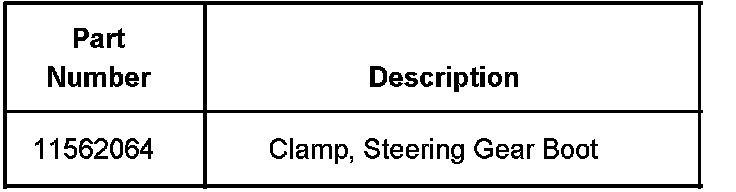
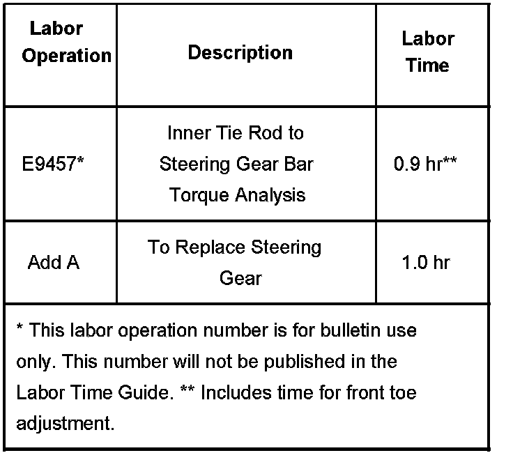

Steering - Steering Wheel Off Center/Clunk When Turning
Bulletin No.: 07-02-32-008ADate: November 21, 2007
TECHNICAL
Subject:
Steering Wheel Off Center While Driving Straight, Clunk Noise While Turning, Early Front Tire Wear (Perform Torque to Tighten Analysis and Repair as Necessary)
Models:
2007 Cadillac Escalade, Escalade ESV, Escalade EXT
2007 Chevrolet Avalanche, Silverado, Suburban, Tahoe
2007 GMC Sierra, Yukon, Yukon XL, Yukon Denali, Yukon Denali XL
1500 Series (1/2 Ton) Models Only
Supercede:
This bulletin is being revised to add additional conditions and update the correction information. Please discard Corporate Bulletin Number 07-02-32-008 (Section 02 - Steering).
Condition
Some customers may comment that the steering wheel is out of position (turned to the left or right) while driving straight ahead and/or a clunk noise while turning with early front tire wear.
Cause
The cause of condition may be due to the threaded joint between the inner tie rod and the rack loosening. Testing has shown it to be unlikely that the joint will unscrew (separate) during normal driving maneuvers, however the steering wheel alignment can be affected.
Correction
If the steering wheel is turned to the left while driving straight ahead, remove the right hand steering gear convoluted boot clamps. After exposing the tie rod connection to the rack bar, use a paint pen or marker and place an indexing mark from the tie rod to the rack bar. Check the "torque to tighten" on the tie rod to rack bar attachment by applying 50 N.m (37 lb ft) torque in a clockwise direction. Do not exceed this specification. Use of a 1-9/16" crowfoot is necessary. Hold the rack bar with a pipe wrench.
If the steering wheel is turned rightward during the straight ahead driving, conduct the same analysis described above on the left hand tie rod.
Inspect the inner tie rod and the rack bar for a change in position of the index mark with respect to each other.
If any position change is observed, replace the steering gear. Please call a engineer to coordinate the return of the steering gear. Align the steering wheel and set toe.
If no relative motion is observed between the tie rod and the rack bar during the 50 N.m (37 lb ft) "torque to tighten" analysis, do not replace any steering components. Reinstall the tie rod boot to the rack housing with a new crimp clamp, P/N 11562064. Align the steering wheel and set toe.
In both cases, reuse the outer tie rod ends.

Parts Information
Warranty Information

For vehicles repaired under warranty, use the table.

Disclaimer